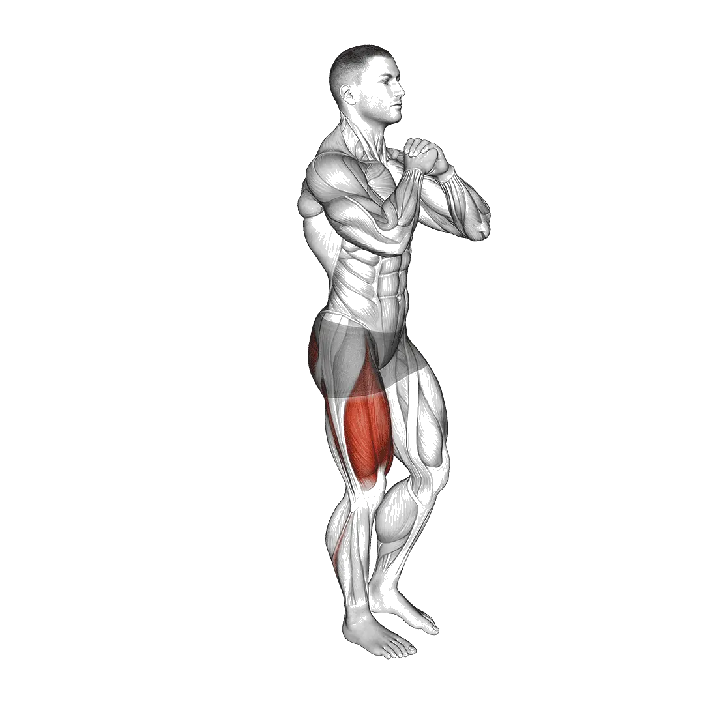

Einbeinige Kniebeuge
Einbeinige Kniebeuge ist eine Übung für den Bereich Beine mit Schwerpunkt auf Quadrizeps, Gluteus maximus, Hamstrings. Durchschnittliche Wiederholungen und Wiederholungsstandards findest du auf einer Seite.

Durchschnittliche Wiederholungen: Mittelstufe
Richtwert für eine Person auf mittlerem Niveau.
Einbeinige Kniebeuge: Durchschnittliche Wiederholungen
| Level | ||
|---|---|---|
| Einsteiger | < 1 | < 1 |
| Anfänger | < 1 | < 1 |
| Fortgeschrittene | 14 | 11 |
| Erfahrene | 33 | 26 |
| Elite | 54 | 42 |
Hinweis: Diese Werte sind Schätzungen für durchschnittliche Wiederholungen in einem Satz. Körpergewicht, Bewegungsumfang, Tempo und andere persönliche Faktoren können die Leistung beeinflussen. Die detaillierten Daten stehen in der Tabelle unten.
Einbeinige Kniebeuge: Wiederholungsstandards
Männer nach Körpergewicht (lb) [Wiederholungen]
| Körpergewicht | Einsteiger | Anfänger | Fortgeschrittene | Erfahrene | Elite |
|---|---|---|---|---|---|
| 110 | < 1 | < 1 | 10 | 29 | 52 |
| 120 | < 1 | < 1 | 11 | 30 | 52 |
| 130 | < 1 | < 1 | 12 | 31 | 52 |
| 140 | < 1 | < 1 | 13 | 31 | 51 |
| 150 | < 1 | < 1 | 13 | 31 | 50 |
| 160 | < 1 | < 1 | 14 | 31 | 50 |
| 170 | < 1 | 1 | 14 | 31 | 49 |
| 180 | < 1 | 2 | 14 | 30 | 48 |
| 190 | < 1 | 2 | 14 | 30 | 47 |
| 200 | < 1 | 3 | 14 | 30 | 46 |
| 210 | < 1 | 3 | 14 | 29 | 45 |
| 220 | < 1 | 3 | 14 | 29 | 45 |
| 230 | < 1 | 3 | 14 | 28 | 44 |
| 240 | < 1 | 3 | 14 | 28 | 43 |
| 250 | < 1 | 4 | 14 | 27 | 42 |
| 260 | < 1 | 4 | 14 | 27 | 41 |
| 270 | < 1 | 4 | 14 | 27 | 40 |
| 280 | < 1 | 4 | 13 | 26 | 40 |
| 290 | < 1 | 4 | 13 | 26 | 39 |
| 300 | < 1 | 4 | 13 | 25 | 38 |
| 310 | < 1 | 4 | 13 | 25 | 37 |
Männer nach Alter [Wiederholungen]
| Alter | Einsteiger | Anfänger | Fortgeschrittene | Erfahrene | Elite |
|---|---|---|---|---|---|
| 15 | < 1 | < 1 | 8 | 24 | 42 |
| 20 | < 1 | < 1 | 13 | 31 | 52 |
| 25 | < 1 | < 1 | 14 | 33 | 54 |
| 30 | < 1 | < 1 | 14 | 33 | 54 |
| 35 | < 1 | < 1 | 14 | 33 | 54 |
| 40 | < 1 | < 1 | 14 | 33 | 54 |
| 45 | < 1 | < 1 | 12 | 30 | 50 |
| 50 | < 1 | < 1 | 9 | 26 | 45 |
| 55 | < 1 | < 1 | 7 | 22 | 39 |
| 60 | < 1 | < 1 | 4 | 17 | 33 |
| 65 | < 1 | < 1 | 1 | 13 | 27 |
| 70 | < 1 | < 1 | < 1 | 9 | 21 |
| 75 | < 1 | < 1 | < 1 | 6 | 16 |
| 80 | < 1 | < 1 | < 1 | 2 | 11 |
| 85 | < 1 | < 1 | < 1 | < 1 | 8 |
| 90 | < 1 | < 1 | < 1 | < 1 | 5 |
Frauen nach Körpergewicht (lb) [Wiederholungen]
| Körpergewicht | Einsteiger | Anfänger | Fortgeschrittene | Erfahrene | Elite |
|---|---|---|---|---|---|
| 90 | < 1 | < 1 | 9 | 23 | 40 |
| 100 | < 1 | < 1 | 10 | 24 | 40 |
| 110 | < 1 | < 1 | 10 | 24 | 39 |
| 120 | < 1 | < 1 | 11 | 24 | 38 |
| 130 | < 1 | 1 | 11 | 24 | 37 |
| 140 | < 1 | 2 | 11 | 23 | 37 |
| 150 | < 1 | 2 | 11 | 23 | 36 |
| 160 | < 1 | 2 | 11 | 23 | 35 |
| 170 | < 1 | 3 | 11 | 22 | 34 |
| 180 | < 1 | 3 | 11 | 22 | 33 |
| 190 | < 1 | 3 | 11 | 21 | 32 |
| 200 | < 1 | 3 | 10 | 20 | 31 |
| 210 | < 1 | 3 | 10 | 20 | 30 |
| 220 | < 1 | 3 | 10 | 19 | 29 |
| 230 | < 1 | 2 | 10 | 19 | 28 |
| 240 | < 1 | 2 | 10 | 18 | 28 |
| 250 | < 1 | 2 | 9 | 18 | 27 |
| 260 | < 1 | 2 | 9 | 17 | 26 |
Frauen nach Alter [Wiederholungen]
| Alter | Einsteiger | Anfänger | Fortgeschrittene | Erfahrene | Elite |
|---|---|---|---|---|---|
| 15 | < 1 | < 1 | 6 | 18 | 31 |
| 20 | < 1 | < 1 | 10 | 24 | 40 |
| 25 | < 1 | < 1 | 11 | 26 | 42 |
| 30 | < 1 | < 1 | 11 | 26 | 42 |
| 35 | < 1 | < 1 | 11 | 26 | 42 |
| 40 | < 1 | < 1 | 11 | 26 | 42 |
| 45 | < 1 | < 1 | 9 | 23 | 38 |
| 50 | < 1 | < 1 | 8 | 20 | 34 |
| 55 | < 1 | < 1 | 5 | 16 | 29 |
| 60 | < 1 | < 1 | 2 | 12 | 24 |
| 65 | < 1 | < 1 | < 1 | 9 | 19 |
| 70 | < 1 | < 1 | < 1 | 5 | 14 |
| 75 | < 1 | < 1 | < 1 | 2 | 10 |
| 80 | < 1 | < 1 | < 1 | < 1 | 6 |
| 85 | < 1 | < 1 | < 1 | < 1 | 3 |
| 90 | < 1 | < 1 | < 1 | < 1 | < 1 |
Hinweis: Die Tabellenwerte sind Richtwerte für Wiederholungen, die in einem Satz möglich sind. Die Daten nach Körpergewicht helfen beim Einschätzen der relativen Belastung, die Daten nach Alter zeigen Trends.
Zielmuskulatur
| Gruppe | Muskeln |
|---|---|
| Zielmuskulatur | Quadrizeps, Gluteus maximus, Hamstrings |
| Sekundäre Muskeln | Adduktoren |
| Stabilisatoren | Äußere schräge Bauchmuskeln |
| Griff | Keine |
Tracking und Analyse in der Shiba App
Gewichte, Wiederholungen und Fortschritt an einem Ort.
Tabellenhinweise
| Level | Beschreibung | Verteilung |
|---|---|---|
| Einsteiger | Beherrscht die saubere Technik und trainiert seit mindestens 1 Monat regelmäßig. | Untere 5% |
| Anfänger | Trainiert seit mindestens 6 Monaten regelmäßig. | Top 80% |
| Fortgeschrittene | Trainiert seit mindestens 2 Jahren regelmäßig. | Top 50% |
| Erfahrene | Trainiert seit mehr als 5 Jahren regelmäßig. | Top 20% |
| Elite | Trainiert diese Übung seit mehr als 5 Jahren gezielt. | Top 5% |